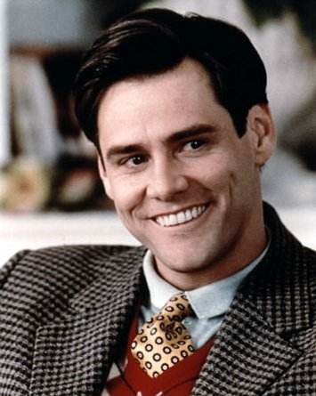

| 海报 | 演员 | 剧情 | 影评 | 资源 | 相关 | 其他 |
|  |
J 金•凯瑞，加拿大裔美籍喜剧演员。活跃于影坛多年，由于他的无俚头风格跟周星驰类似.
曾有中文媒体把他誉为“好莱坞的周星驰”，然而他近几年来的演出已超脱出了单纯的变脸丑角局限。
凯瑞是于1986年开始踏足影坛。起先他是在一些影片出演配角
自1995年起金凯瑞参加了《蝙蝠侠3》、《王牌威龙2》、《王牌特派员》都先后获得大成功。此时他的片酬已达到2000万美元。
At that time, he was called leaf, and he didn't change his name to Joaquin until the early 1990s.
In 2005's new film "never move forward", marking the film with a phoenix style performance brand.
He was nominated for best actor at the 78th Academy Awards and best actor in comedy
楚门（金?凯瑞 Jim Carrey 饰）是一个平凡得不能再平凡的人，除了一些有些稀奇的经历之外――初恋女友突然失踪、溺水身亡的父亲忽然似乎又出现在眼前，他和绝大多数30多岁的美国男人绝无异样。这令他倍感失落。他也曾试过离开自己生活了多年的地方，但总因种种理由而不能成行。 直到有一天，他忽然发觉自己似乎一直在被人跟踪，无论他走到哪里，干什么事情。这种感觉愈来愈强烈。楚门决定不惜一切代价逃离这个他生活了30多年的地方，去寻找他的初恋女友。 但他却发现自己怎样也逃不出去。真相其实很残忍。 |
换句话说，他的生活就是真实的生活，如果什么也没出现什么也没发现。再换句话说，所有的配角被迫清醒地站在这个虚拟的边缘，吃喝拉撒24小时待命，意识到此刻的高潮被以亿计算的人类消费着，除此之外生活的区别只是没有摄像头对着，不用去区分真或假。精神病和真实一线之隔。坚持到底你就赢了。 这是一部每个中国人和每名中国同志都应该看的电影，我们就是无数的楚门，生活在这个时代。我们的命运被操控在他人手中，大多数人还并没有发现，更多的人发现了也无力挣脱。心灵的顿悟是人生的必修课，你不去选择它，它就会左右你。“人生如戏，戏如人生” |
其实电影本身编得并不算十分出色，照顾到了一些细节，但破绽也浑身上下都是。不过，在乎的不是这个故事编得如何，而是这个idea，让人不由环视一下自己的周遭。以前在科幻世界上也看过类似的桥段，有关地球仪的。
还记得第一次看完后的震撼。从一出生就在全世界关注下，父母朋友亲人甚至所有30年的人生轨迹都在设定中的楚门，在逐渐剥开疑团揭露残酷真相后，他有勇气走出这个巨大的牢笼，而我们每个人又何尝不是楚门，都在某种程度上被设定被限制被禁锢，又有几个会寻找自由挣脱桎梏。 |
| ?19信工章明辉 |